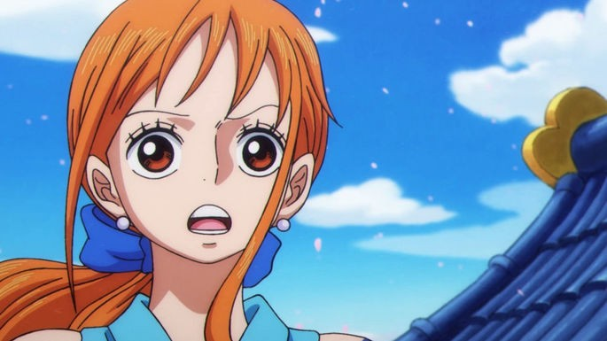

Roronoa Zoro

Aunque tiene una personalidad que mezcla una seriedad casi constante con un humor torpe, Zoro se ganó a los fanáticos del anime y terminó convirtiéndose, por momentos, en el alivio cómico de los episodios, debido a su completa falta de dirección. Además, su amistad con Luffy es icónica. El pirata incluso aceptó la invitación de unirse a los Sombreros de Paja después de que el capitán le salvara la vida.
Se le ve comúnmente con sus tres espadas. Uno de los misterios que rodean a Zoro surgió tras el salto en el tiempo que se produce tras la Saga de la Guerra de Marineford, cuando el pirata apareció con una cicatriz que mantiene su ojo izquierdo permanentemente cerrado. La falta de explicaciones sobre la lesión ya ha provocado diversas teorías entre los aficionados.
Nami

Antes de convertirse en la tercera integrante de los Sombreros de Paja, Nami incluso se infiltró en el grupo con la intención de robarles. La joven perdió a sus padres en la guerra a una edad temprana y fue adoptada por Bell-mère, una mujer de la Marina.
Todo iba bien hasta que el pirata Arlong llegó al pueblo donde vivían, mató a la madre adoptiva de Nami y secuestró a la niña para que le hiciera mapas. Nami siempre ha mostrado aptitudes para la cartografía.
Pasó ocho años bajo el yugo de Arlong, hasta que le dieron la misión de tratar de robar a los Sombreros de Paja. Para su sorpresa, la tripulación de Luffy logró rebelarse y derrotar a Arlong. Desde entonces, alrededor del episodio 6, se asoció con Luffy y Zoro y comenzó a actuar como cartógrafa y tesorera del equipo, motivada aún más por su sueño de hacer un mapa del mundo entero.
Agreguen a eso las habilidades de Nami como navegante y sus poderes para cambiar el clima, y podemos concluir que la incorporación de la joven a la tripulación fue de gran peso. Su recompensa es de $66,000,000.
Ussop
Usopp se une a los Sombreros de Paja durante el Arco de Villa Syrup. Sin embargo, es sensible e inseguro debido a su pasado, y esto provoca que deje a los Sombreros de Paja por un tiempo. Luego de unirse al grupo con el sueño de convertirse en un gran pirata, choca con Luffy, y no se siente lo suficientemente bien como para ser parte del equipo. Usopp, sin embargo, no solo regresa al equipo en el arco Post-Enies Lobby, sino que también muestra un gran desarrollo a lo largo del anime.
Tras el salto temporal, el pirata demostró el dominio de nuevas habilidades de combate. Además, se apoya en su talento innato como tirador y en su creatividad para desarrollar distintos inventos, entre ellos el Clima-Tact, un artefacto con el que Nami controla el clima. No es de extrañar que la recompensa de Usopp, que alguna vez fue de $30,000,000, actualmente sea de $200,000,000.
Sanji
El niño cruzó la Línea Roja hacia East Blue, donde trabajó como cocinero en un barco, hasta que el sous-chef Zeff lo salvó del naufragio. Sanji terminó convirtiéndose en el aprendiz de Zeff durante años, en el restaurante donde, un día, conoce a Luffy.
Después de que Sanji se pelea con un teniente de la Marina por desperdiciar comida, termina alimentando a escondidas a un fugitivo hambriento. El capitán de los Sombreros de Paja ve el acto amable y lo invita a unirse a la tripulación.
Después de varios conflictos con diferentes enemigos, Sanji acepta la invitación de Luffy al final del arco de Baratie, en el episodio 30. Su motivación es su sueño de encontrar el paraíso del supuesto chef, All Blue. Este legendario mar místico sería el punto de encuentro de East Blue, West Blue, North Blue y South Blue, y presentaría la vida silvestre de los cuatro océanos.
Sanji es el quinto miembro del grupo, y destacó sin mucho esfuerzo por sus habilidades como cocinero. Actualmente se ubica como uno de los cuatro mejores luchadores de la tripulación, junto con Luffy, Zoro y Jinbei, y tiene la tercera recompensa más grande del equipo, con un valor de $330,000,000.
Tony Tony Chopper
Es uno de los primeros en unirse a las bromas de Luffy y Usopp. Su primer contacto con el grupo, sin embargo, no fue precisamente positivo. Su desconfianza hacia los humanos solo se vio acentuada por las bromas de Luffy y Sanji sobre cocinarlo. Las habilidades médicas de Chopper, sin embargo, hicieron que Luffy lo invitara a unirse a la tripulación, invitación que acepta al final del arco de Drum Island, en el episodio 91, también motivado por el recuerdo del Dr. Hiriluk, que le decía que navegar por el mundo le permitiría ampliar sus horizontes médicos.
A medida de que controlaba cada vez más los poderes que le otorgaba la Hito Hito no Mi, pudo asumir siete formas diferentes. Puede hacer crecer su cabello, aumentar sus músculos, disminuir su peso y mejorar su velocidad. Estas son algunas de las modificaciones que puede realizar.
Nico Robin
Séptimo miembro de los Sombreros de Paja, Nico Robin se desempeña como arqueóloga e historiadora del grupo. La única sobreviviente de la isla de Ohara, la joven es actualmente la única persona capaz de leer Poneglyphs, un acto considerado un riesgo para el Gobierno Mundial. Considera que sus compañeros de tripulación no solo la salvaron sino que revivieron su sueño de alcanzar la libertad para viajar por el mundo estudiando sus misterios. Su recompensa es de $130,000,000.
Nico ha logrado una forma física increíble durante su vida de lucha y huida. Además, comió la fruta Hana Hana no Mi, que le otorgaba la capacidad de replicar partes de su cuerpo en cualquier superficie, ya fueran objetos, otros seres vivos o en su propio cuerpo.